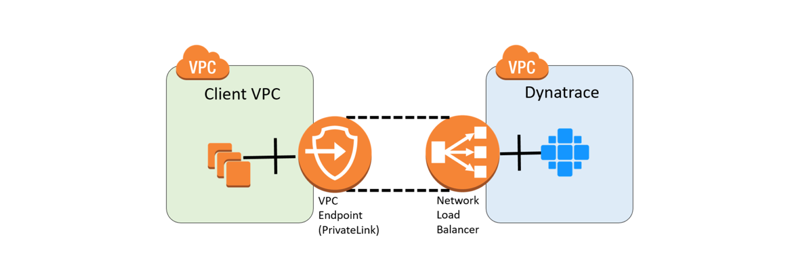

使用 AWS PrivateLink 连接到 Dynatrace
AWS PrivateLink 允许您将应用程序直接连接到 Amazon VPC 服务，以便流量永远不会离开 AWS 云。您可以使用 PrivateLink 将受监控主机连接到 Dynatrace VPC 端点。Dynatrace 监控流量始终是加密且安全的，但 PrivateLink 提供更高的安全性，稳定的连接性以及降低的流量成本。
PrivateLink 与 Dynatrace 的主要用例是在 AWS VPC 中运行的受监控应用程序的连接。

但是，如果您使用 DirectConnect 或 VPN Gateway 将网络连接到给定区域中的 VPC，也可以将 AWS VPC 用于内部部署应用程序。
在这两种情况下，客户端 VPC 和 Dynatrace VPC 必须位于同一AWS区域中。
设置 PrivateLink
将主机连接到 Dynatrace VPC
- 向我们发送一封电子邮件，指明您的用例，Dynatrace 环境 ID 以及您要用于连接的 AWS 账户 ID 的详细信息。在我们验证了您的信息和请求后，我们会将您的帐户列入白名单，为您的案例准备 CloudFormation 模板，并通过电子邮件与您联系。
- 使用 AWS 控制台或 API 调用为其中一个受支持的区域创建接口 VPC Endpoint。有关更多信息，请参阅 AWS 文档中的接口 VPC 端点（AWS PrivateLink）。
Dynatrace 目前支持以下 AWS 区域和相应的可用区域：
| AWS 区域代码 | 可用区名称 | 可用区域ID |
|---|---|---|
| us-east-1 | us-east-1a，us-east-1b，us-east-1c | use1-az2，use1-az4，use1-az6 |
| us-west-2 | us-west-2a，us-west-2b，us-west-2c | usw2-az1，usw2-az2，usw2-az3 |
| eu-west-1 | us-west-1a，us-west-1b，us-west-1c | euw1-az1，euw1-az2，euw1-az3 |
| ap-southeast-2 | ap-southeast-2a，ap-southeast-2b，ap-southeast-2c | apse2-az1，apse2-az2，apse2-az3 |
AWS 控制台
- 在 AWS 控制台中，选择一个受支持的区域，转到 VPC服务，“ 端点”部分，然后单击“创建端点”以创建您的 PrivateLink 端点。
- 选择按名称查找服务 作为服务类别，输入从 Dynatrace 收到的服务名称（例如
com.amazonaws.vpce.us-west-2.vpce-svc-0e6de648b166714ad），然后单击验证。 - 配置 VPC，子网和安全组设置。安全组需要允许端口443上的传入流量。如果为受监视的应用程序使用多个 VPC，请对每个 VPC 重复此步骤。
API 调用
- 使用
create-vpc-endpoint调用。用适用值更换<aws-region>，<vpc-id>，<list-of-subnets>和<list-of-security-groups>。例如：
shell
aws ec2 create-vpc-endpoint --region <aws-region> --vpc-endpoint-type Interface --service-name com.amazonaws.vpce.us-west-2.vpce-svc-0e6de648b166714ad --vpc-id <vpc-id> --subnet-id <list-of-subnets> --security-group-id <list-of-security-groups>
- 使用我们提供的 CloudFormation 模板创建一个私有 DNS，这样您就可以使用创建的 PrivateLink 透明地连接到 Dynatrace。有关更多信息，请参见在 AWS doc 中的 AWS CloudFormation 控制台上创建堆栈。
注意：如果尝试从一个区域中的 VPC 连接到另一个区域中的 Dynatrace Server，则可能会遇到 DNS 解析问题。确保您的 VPC 和所有 Dynatrace 环境位于同一 AWS 区域。
使用 ActiveGate 进行 PrivateLink 连接
虽然您可以通过 PrivateLink 连接 OneAgent，但我们建议您使用 ActiveGate。如果您通过 ActiveGate 下载 OneAgent 安装程序，它已包含预先配置的 ActiveGate 端点，并且不需要连接到 PrivateLink 端点。例如，如果您xyz12345.live.dynatrace.com在本地网络中运行名为 ActiveBate 的环境，则https://172.31.1.5:9999通过将环境域替换为 ActiveGate 域并在路径中添加环境上下文来修改 OneAgent 安装程序下载 URL，例如：
$ wget --no-check-certificate -O Dynatrace-OneAgent-Linux-1.149.188.sh https://172.31.1.5:9999/e/xyz12345/api/v1/deployment/installer/agent/unix/default/latest?Api-Token=<api token>&arch=x86&flavor=default
在 OneAgent 安装程序下载时，Dynatrace server必须知道 ActiveGate。
接下来会发生什么？
完成这些步骤后，VPC 中安装的所有 ActiveGate 或 OneAgent 实例将开始使用 PrivateLink。由于 DNS 覆盖，使用 PrivateLink 是透明的。不需要重新启动进程。
要验证您的 PrivateLink 端点是否真正使用过：
- 尝试从 VPC 中运行的实例解析 Dynatrace 环境域。域应解析为 VPC 中的专用 IP 地址，例如：
$ nslookup xyz12345.dynatrace.com
cluster-us-west-2-prod-us-west-2-oregon.live.ruxit.com canonical name = vpce-0c79a2e58780e4b62-x8vhytdj.oregon-1.vpce.dynatrace.com.
Name: vpce-0c79a2e58780e4b62-x8vhytdj.oregon-1.vpce.dynatrace.com
Address: 172.31.41.143
Name: vpce-0c79a2e58780e4b62-x8vhytdj.oregon-1.vpce.dynatrace.com
Address: 172.31.28.144
Name: vpce-0c79a2e58780e4b62-x8vhytdj.oregon-1.vpce.dynatrace.com
Address: 172.31.13.64
-
如果域解析为公共 IP 地址，请仔细检查 DNS 和 VPC 配置。私有 DNS 区域（
EndpointRegion）和 VPC ID（Vpcid）必须与相应的实例设置匹配。该 VPC 还必须支持私人托管区域，所以enableDnsHostnames并enableDnsSupport必须设置为true。 -
如果域名按预期解析，但 OneAgent 无法连接到端口443上的端点，请检查与您的 PrivateLink 端点关联的安全组设置中是否允许端口443上的传入流量。
-
您还可以为实例的网络接口或与 PrivateLink 关联的网络接口启用 VPC 流日志。通过检查日志中的 IP 地址，您可以验证实例是否正在与专用端点通信。如果您看到
REJECT条目而不是ACCEPT，则很可能是您的安全组设置阻止了流量。